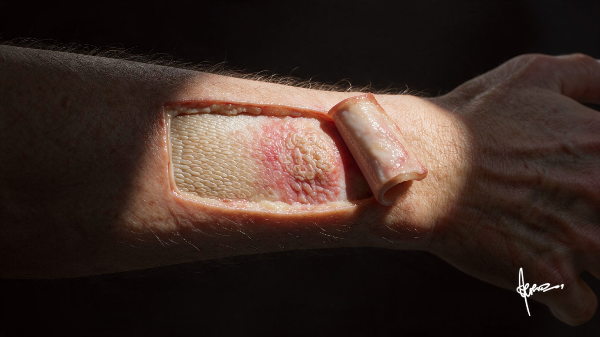

Decades of UV exposure leave their first mark in the basal layer, years before anything is visible. By the time a patient feels a rough patch on sun-exposed skin, the damage has already climbed every layer above it.
This case traces that climb: from the basal cell where the mutation started, through the dysplastic spinosum, out to the inflamed dermis feeding it, and up to the corneocyte shield where the damage finally becomes something you can feel.

The deepest epidermal layer is the stratum basale, where keratinocyte stem cells divide and begin their upward journey. UV-B radiation damages DNA directly, inducing pyrimidine dimers. TP53 mutations accumulate here first, years before anything is visible at the surface. On the left, basal cells sit flat and orderly, each nucleus aligned in the same plane. On the right, that polarity is gone: cells crowd upward, overgrow, and stack out of order.

The atypical keratinocytes here, enlarged nuclei and crowded architecture, are the origin of the entire lesion. Everything visible at the surface began as a single cell in this layer that forgot how to stop dividing.
Ascending through the stratum spinosum, the keratinocytes lose their orderly maturation. Normal cells flatten and elongate as they rise toward the surface. Here, they are crowded, hyperchromatic, and haphazardly arranged. Atypical nuclei appear at levels that should contain only maturing cells. Polarity is lost.

The tissue is not yet carcinoma, but the architecture of controlled differentiation has been replaced by a field of dysplastic proliferation. This is the histological signature of actinic damage.
One layer above the spinosum, keratinocytes flatten further and take on a granular texture as they load up with keratohyalin. This is also where melanosomes, packets of melanin transferred from melanocytes below, cap the upper surface of each keratinocyte nucleus, forming a dark umbrella that shields the DNA from UV striking from above.

In chronically sun-damaged skin, this defense is running at capacity long before any lesion appears. The melanin umbrella can slow the damage, but in actinic keratosis, mutations have already accumulated faster than the pigment shield can compensate for.
The outermost barrier of the skin is the stratum corneum, a layer of flattened, anucleate corneocytes held together by lipid matrix. Under normal turnover, these cells shed imperceptibly. In actinic keratosis, the accumulated damage below finally disrupts the desquamation cycle here too.

Cornified cells accumulate in thickened, adherent scales. The surface becomes rough to the touch, a physical marker of a molecular error that started three layers below. What looks like dry skin is disorganized keratinization, the last stop in a journey that began at the basal layer.
Tap the pins to explore the layers
Tap a pin to see what it is.
Actinic keratosis occupies a clinical grey zone between benign sun damage and squamous cell carcinoma in situ. The majority of lesions do not progress, but the field effect is real: skin that has produced one AK has sustained the cumulative UV injury that makes further lesions likely. Treatment is local destruction (cryotherapy, topical 5-fluorouracil, photodynamic therapy), but the deeper message is surveillance. The illustrations in this series were built to make that message visible: the corneocyte that will not shed, the keratinocyte that lost its polarity, the basal cell where the TP53 mutation took hold. Understanding the mechanism is what makes the follow-up legible.


You're set. We'll send the full write-up to your inbox shortly.